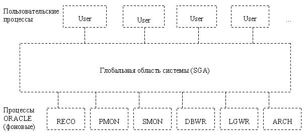
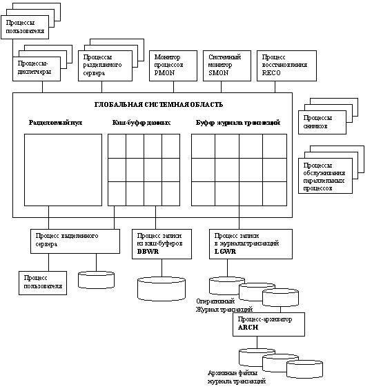

Процессы инстанции Oracle
Инстанция ORACLE
Независимо от типа компьютера, на котором выполняется ORACLE, и от конкретных используемых опций памяти и процессов, с каждой работающей базой данных ORACLE ассоциируется инстанция ORACLE.
Каждый раз, когда на сервере запускается база данных, происходит распределение области памяти, называемой глобальной областью системы (SGA), и запускаются один или более процессов ORACLE.
Совокупность SGA и процессов ORACLE называется инстанцией базы данных ORACLE (см. рис. 7). Структуры памяти и процессы инстанции предназначены для эффективного управления базой данных и обслуживания одного или нескольких пользователей ассоциированной базы данных.

Рисунок 7 - Инстанция ORACLE
Сначала инстанция запускается, затем она монтирует базу данных. На одних и тех же машинах могут быть запущены несколько инстанций, каждая из которых имеет доступ к своей собственной физической базе данных. В слабосвязанных системах используется параллельный сервер ORACLE, в котором одна и та же база данных монтируется несколькими инстанциями; все эти инстанции разделяют единую физическую базу данных.
Процесс - это "канал управления", или механизм в операционной системе, способный выполнять последовательность шагов. Некоторые операционные системы используют термины "задание" или "задача".
Процесс обычно имеет свою собственную личную область памяти, в которой он выполняется. Структура процесса такой системы, как ORACLE, существенна, потому что она определяет, как осуществляется параллельная деятельность и как она управляется.
Например, двумя целями структуры процесса могут быть:
- симуляция личных окружений для нескольких одновременно работающих процессов, так, как будто каждый процесс имеет свое собственное личное окружение;
- обеспечение разделения между процессами ресурсов компьютера, необходимых каждому процессу, но не на долгое время.
Архитектура процессов ORACLE спроектирована для максимизации производительности.
Однопроцессная инстанция ORACLE
Однопроцессная (также называемая однопользовательской) система ORACLE - это система базы данных, в которой весь код ORACLE исполняется одним процессом. Не используются разные процессы, чтобы разграничить выполнение компонент ORACLE и прикладной программы клиента. Вместо этого весь код ORACLE и единственное приложение базы данных выполняются как единственный процесс.
Единственный процесс исполняет весь код, ассоциированный как с приложением базы данных, так и с ORACLE.
К инстанции ORACLE в однопроцессном окружении может иметь доступ лишь один пользователь; несколько пользователей не могут обращаться к базе данных одновременно.
Например, к ORACLE, выполняющемуся под операционной системой MS-DOS на PC, может иметь доступ лишь один пользователь, потому что MS-DOS не способна выполнять несколько процессов.
Многопроцессная инстанция ORACLE
Многопроцессный ORACLE (называемый также многопользовательским) использует несколько процессов для исполнения различных частей ORACLE, а также отдельный процесс для каждого присоединенного пользователя. Каждый процесс в многопроцессном ORACLE выполняет специфическую задачу. Благодаря разделению работы ORACLE и приложений базы данных на несколько процессов, несколько пользователей и приложений могут одновременно присоединяться к единственной инстанции базы данных, в то время как система поддерживает отличную производительность.
Большинство систем баз данных - многопользовательские, ибо одним из основных преимуществ СУБД является управление данными, с которыми много пользователей работают одновременно.
Каждый присоединенный пользователь имеет отдельный пользовательский процесс, а для выполнения ORACLE используются несколько фоновых процессов. В многопроцессной системе все процессы можно разделить на две группы: пользовательские процессы и процессы ORACLE.
Пользовательские процессы
Когда пользователь запускает прикладную программу, такую как программу Pro*C, или инструмент ORACLE, такой как SQL*DBA, для выполнения приложения пользователя создается пользовательский процесс.
В многопроцессных системах, ORACLE функционирует через два типа процессов ORACLE: процессы сервера и фоновые процессы.
Процессы сервера создаются для обработки запросов от пользовательских процессов, присоединяемых к инстанции. Часто, когда приложение и ORACLE работают не через сеть, а на одной и той же машине, пользовательский процесс и соответствующий ему процесс сервера комбинируются в единый процесс, чтобы уменьшить накладные расходы системы. Однако, если приложение и ORACLE работают на разных машинах, пользовательский процесс взаимодействует с ORACLE через отдельный процесс сервера.
Процессы сервера (или серверная порция в комбинированном процессе пользователь/сервер), создаваемые от имени приложения каждого пользователя, могут выполнять одну или несколько из следующих задач:
- разбор и исполнение предложений SQL, выдаваемых приложением;
- считывание необходимых блоков данных с диска (из файлов данных) в разделяемые буфера базы данных в SGA, если этих блоков еще нет в SGA;
- возврат результатов таким способом, чтобы приложение могло обрабатывать эту информацию.
Для максимизации производительности и координации работы многих пользователей многопроцессная система ORACLE использует несколько дополнительных процессов, называемых ФОНОВЫМИ ПРОЦЕССАМИ. На многих операционных системах фоновые процессы создаются автоматически при запуске инстанции. На других операционных системах процессы сервера создаются как часть инсталляции ORACLE.
Инстанция ORACLE может иметь большое число фоновых процессов; не все из них присутствуют всегда. Эти процессы имеют следующие имена в инстанции ORACLE:
- процесс записи в базу данных (DBWR);
- процесс записи в журнал (LGWR);
- контрольная точка (CKPT);
- монитор системы (SMON);
- монитор процессов (PMON);
- архиватор (ARCH);
- восстановитель (RECO);
- блокировка (LCKn);
- диспетчер (Dnnn);
- сервер (Snnn).
Процессы инстанции Oracle
Взаимодействие фоновых процессов с различными частями базы данных ORACLE проиллюстрировано на рисунке 8.

Рисунок 8 - Фоновые процессы много процессной инстанции ORACLE
Процесс записи в базу данных (DBWR)
Вся запись буферов в файлы данных выполняется процессом DBWR, фоновым процессом ORACLE, ответственным за управление буферным кэшем. Когда буфер в буферном КЭШе модифицируется, он помечается как "грязный"; основная задача процесса DBWR - поддержание "чистоты" буфера путем записи грязных буферов на диск. По мере того, как буфера в КЭШе заполняются из базы данных и загрязняются пользовательскими процессами, число свободных буферов убывает. Когда число свободных буферов становится слишком маленьким, пользовательские процессы, которые должны считывать в кэш блоки данных с диска, не могут найти свободные буфера. DBWR управляет буферным КЭШем так, чтобы пользовательские процессы всегда могли найти свободные буфера.
Алгоритм LRU поддерживает в памяти блоки данных, которые использовались наиболее недавно, и тем самым минимизирует ввод-вывод. Часто используемые блоки, например, блоки, входящие в часто используемые небольшие таблицы или индексы, постоянно поддерживаются в кэше, так что их не приходится все время считывать с диска. Блоки, используемые не столь часто, например, части больших таблиц или блоки листьев из очень больших индексов, удаляются из SGA, если они не были модифицированы после их считывания, или записываются на диск после их модификации, чтобы освободить в буферном кэше место для других блоков. Схема LRU заставляет наиболее часто используемые блоки оставаться в буферном кэше, так что, когда блок записывается на диск, маловероятно, что он вскоре потребуется снова. Однако, если процесс DBWR становится слишком активным, он может записывать на диск и те блоки, которые могут потребоваться снова.
Процесс DBWR получает сигнал о том, что надо записывать грязные блоки, при следующих условиях:
- Когда процесс сервера перемещает буфер в "грязный список" и обнаруживает, что этот список достиг пороговой величины, он сигнализирует процессу DBWR. Пороговая величина определяется как половина значения параметра DB_BLOCK_WRITE_BATCH.
- Когда процесс сервера просмотрел в списке LRU число буферов, равное DB_BLOCK_MAX_SCAN_CNT, и не нашел свободного буфера, он прекращает поиск и сигнализирует процессу DBWR (ибо не хватает свободных буферов, и DBWR должен освободить часть буферов).
- Когда истекает таймаут (каждые три секунды), DBWR сигнализирует самому себе.
- Когда возникает контрольная точка, процесс записи журнала (LGWR) сигнализирует процессу DBWR.
В первых двух случаях DBWR записывает блоки из грязного списка на диск посредством одной МНОГОБЛОЧНОЙ ОПЕРАЦИИ ЗАПИСИ. Число блоков, записываемых в одной операции, специфицируется параметром инициализации DB_BLOCK_WRITE_BATCH. Если в грязном списке еще нет DB_BLOCK_WRITE_BATCH буферов, когда DBWR принял сигнал, то DBWR просматривает список LRU в поисках дополнительных грязных буферов. ТАЙМАУТ возникает, если DBWR неактивен в течение трех секунд. В этом случае DBWR отыскивает указанное число буферов в списке LRU и записывает все найденные грязные буфера на диск. При каждом таймауте DBWR ищет новую группу буферов. Число буферов, которое DBWR просматривает при таймауте, равно удвоенному значению параметра инициализации DB_BLOCK_WRITE_BATCH. Если база данных простаивает, DBWR в конечном счете переписывает на диск весь буферный кэш.
Когда возникает контрольная точка, процесс записи журнала (LGWR) специфицирует список модифицированных буферов, которые должны быть записаны на диск. DBWR переписывает указанные буфера на диск.
Процесс записи в журнал (LGWR)
Буфер журнала повторения записывается в файл журнала повторения на диск процессом записи в журнал (LGWR), фоновым процессом ORACLE, ответственным за управление буфером журнала повторения.
Процесс LGWR записывает все записи повторения, которые были скопированы в буфер после последней операции его записи. LGWR записывает на диск один непрерывный участок буфера.
Процесс LGWR записывает:
- запись подтверждения, когда пользовательский процесс подтверждает транзакцию;
- буфера повторения каждые три секунды;
- буфера повторения, когда буфер журнала повторения заполняется на одну треть;
- буфера повторения, когда процесс DBWR записывает на диск модифицированные буфера.
LGWR осуществляет синхронную запись в активную зеркальную группу файлов журнала повторения. Если один из файлов в этой группе запорчен или недоступен, LGWR может продолжать запись в остальные файлы (ошибка также регистрируется в файле трассировки LGWR и системном файле ALERT). Если запорчены все файлы в группе, или группа недоступна, потому что она не была архивирована, то LGWR не может продолжать функционировать. |  |
|---|
Иногда, если требуется больше места в буфере, LGWR записывает записи журнала повторения до того, как транзакция подтверждена. Эти записи становятся постоянными лишь в случае подтверждения транзакции. | |
|---|
Контрольная точка (CKPT)
Когда возникает контрольная точка, заголовки всех файлов данных должны быть обновлены, чтобы отразить эту контрольную точку. В обычных обстоятельствах эту работу выполняет LGWR. Однако, если контрольные точки значительно понижают производительность системы (обычно при наличии многих файлов данных), то вы можете задействовать процесс CKPT, чтобы отделить выполнение контрольных точек от другой работы, выполняемой процессом LGWR. Для большинства приложений процесс CKPT не является необходимым. Если ваша база данных имеет много файлов данных, и производительность процесса LGWR существенно снижается во время контрольных точек, вы можете включить процесс CKPT.
Процесс CKPT не записывает блоки на диск; эту работу всегда выполняет DBWR. Статистика DBWR CHECKPOINTS, которую выдает монитор статистики SQL*DBA, показывает число завершенных сообщений контрольной точки, независимо от того, задействован ли процесс CKPT. Процесс CKPT включается или отключается параметром инициализации CHECKPOINT_PROCESS; его умалчиваемое значение FALSE.
Монитор системы (SMON)
Процесс монитора системы (SMON) выполняет восстановление инстанции при запуске инстанции. SMON также отвечает за очистку временных сегментов, когда они больше не используются; он также сжимает непрерывные свободные экстенты, чтобы сделать доступным большее количество блоков свободной памяти. В среде Параллельного сервера SMON осуществляет восстановление инстанции для сбившегося процессора или инстанции.
SMON регулярно "просыпается", чтобы проверить необходимость своей работы; он может также быть вызван, если другой процесс обнаружит необходимость в нем.
Монитор процессов (PMON)
Монитор процессов (PMON) выполняет восстановление процесса, когда пользовательский процесс сбивается. PMON отвечает за очистку кэша и освобождение ресурсов, использовавшихся процессом. Например, он сбрасывает состояние таблицы активных транзакций, освобождает блокировки и удаляет ID процесса из списка активных процессов.
PMON также периодически проверяет состояние серверных и диспетчерских процессов и перезапускает погибшие процессы (но не те, которые ORACLE уничтожил преднамеренно). Как и SMON, PMON регулярно "просыпается", чтобы проверить необходимость своей работы; он может также быть вызван, если другой процесс обнаружит необходимость в нем.
Восстановитель (RECO)
Восстановитель (RECO) - это процесс, используемый с распределенной опцией ORACLE, которая автоматически исправляет сбои, в которых участвуют распределенные транзакции. Фоновый процесс RECO на узле автоматически соединяется с базами данных, участвовавшими в сомнительной распределенной транзакции. Когда соединение между соответствующими серверами баз данных восстановлено, процессы RECO автоматически разрешают все сомнительные транзакции. Строки, соответствующие каждой разрешаемой сомнительной транзакции, автоматически удаляются из таблицы ожидающих транзакций каждой базы данных. Если фоновый процесс RECO сервера базы данных пытается установить соединение с удаленным сервером, а этот удаленный сервер оказывается недоступным в сети, или соединение не восстанавливается, то RECO автоматически повторяет попытку соединения через интервал времени. Интервалы между последовательными попытками соединения экспоненциально увеличиваются.
Архиватор (ARCH)
Архиватор (ARCH) копирует онлайновые файлы журнала повторения на указанное устройство памяти, когда они заполняются. ARCH присутствует лишь в том случае, когда журнал повторения используется в режиме ARCHIVELOG и включено автоматическое архивирование.
Блокировка (LCKn)
В среде Параллельного сервера до десяти процессов блокировки (LCK0, ..., LCK9) могут использоваться для блокировок между инстанциями; однако для большинства систем параллельного сервера достаточно одного процесса блокировки (LCK0).
Диспетчерские процессы (Dnnn)
Диспетчерские процессы позволяют пользовательским процессам разделять ограниченное число серверных процессов. Без диспетчера, каждому пользовательскому процессу требуется свой выделенный процесс сервера; однако в конфигурации многоканального сервера несколько разделяемых серверных процессов могут обслуживать такое же число пользователей. Поэтому в системе с большим количеством пользователей многоканальный сервер может поддерживать большее число пользователей, особенно в окружениях клиент-сервер, когда приложение-клиент и сервер работают на разных машинах. Для одной инстанции базы данных может быть создано несколько диспетчерских процессов; по меньшей мере один диспетчер должен быть создан для каждого сетевого протокола, через который пользователи соединяются с ORACLE. Администратор базы данных должен запустить оптимальное число диспетчерских процессов, в зависимости от ограничения операционной системы для числа соединений ни один процесс, и может добавлять и удалять диспетчерские процессы во время работы инстанции.
Многоканальный сервер требует наличия SQL*Net версии 2 или более поздней. Каждый пользовательский процесс, соединяющийся с диспетчером, должен делать это через SQL*Net, даже если оба процесса выполняются на одной и той же машине. В конфигурации многоканального сервера, процесс слушателя сети ожидает запросов на соединение от приложений-клиентов, и направляет каждый такой запрос диспетчерскому процессу. Если слушатель не может соединить запрос со свободным диспетчером, он запускает выделенный серверный процесс и соединяет клиента с этим процессом. Процесс слушателя не является частью инстанции ORACLE; скорее это часть сетевых процессов, работающих с ORACLE. | |
|---|
Когда запускается инстанция, слушатель открывает и устанавливает коммуникационный путь, через который клиенты соединяются с ORACLE. Затем каждый диспетчер сообщает слушателю адрес, по которому этот диспетчер слушает запросы на соединение. Когда пользовательский процесс выдает запрос на соединение, слушатель исследует этот запрос и определяет, может ли данный пользователь использовать диспетчера. Если да, то процесс слушателя возвращает адрес диспетчерского процесса с наименьшей загрузкой, и пользовательский процесс непосредственно соединяется с этим диспетчером.
Некоторые пользовательские процессы не могут общаться с диспетчером (например, пользователи, соединяющиеся через SQL*Net более старой версии, чем 2.0), и процесс сетевого слушателя не может соединять таких пользователей с диспетчером. В этом случае слушатель создает выделенный серверный процесс и устанавливает требуемое соединение.